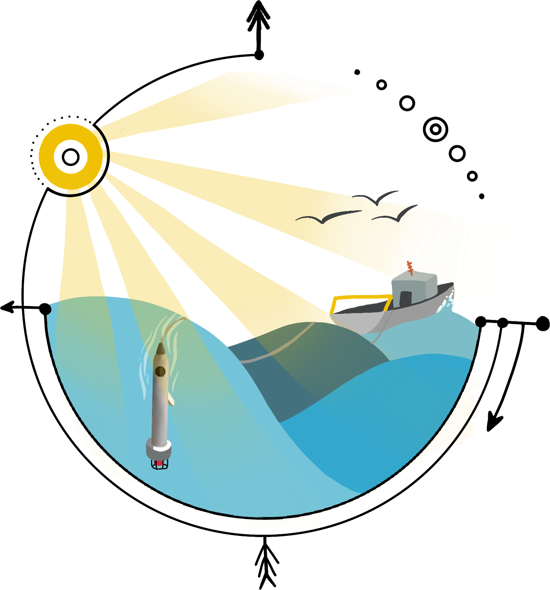

- EcoCTD Open Project
- Current version v2.2
- Learn more
An underway profiler for high-resolution ocean research
The EcoCTD Open Project
The EcoCTD is designed to couple physical (temperature, salinity, pressure) and bio-optical (chlorophyll-fluorescence, backscatter, oxygen, and others) measurements throughout the water column. It takes advantage of often under-used transit time to complete vertical profiles to up to 500 m at high resolution. It is generally operated from a light-weight, portable, winch, and can be towed at a ship speed up to 8 knots.


❮
❯
Field-tested, science-grade data
EcoCTDs have been succesfully used in the field, as part as both dedicated field testing, and large international research programs such as CALYPSO (ONR-funded) and S-MODE (NASA-funded).
Open source project for all
The EcoCTD Open Project is community-oriented. Suggestions, improvments, and modifications are all welcome and encouraged.